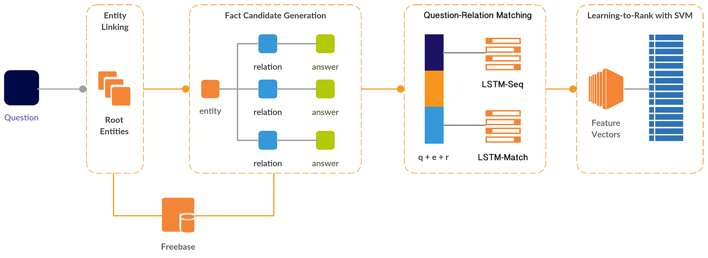
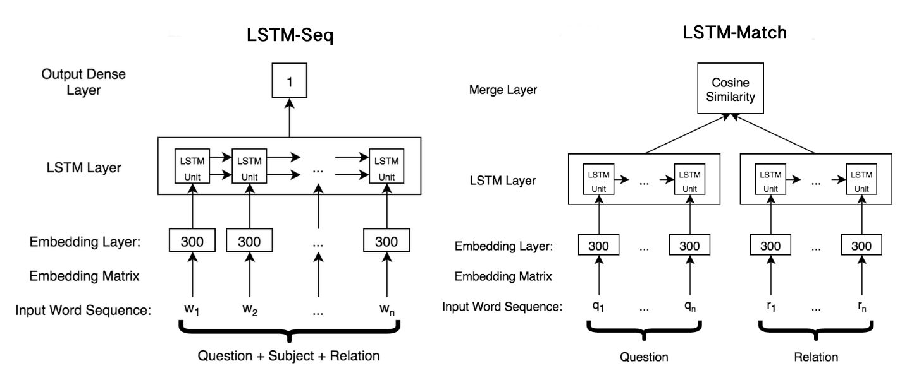

Natural Language Supported Relation Matching for Question Answering with Knowledge Graphs
Hongyu Li, Chenyan Xiong, Jamie Callan
Carnegie Mellon University
Roadmap
- What task?
- Question Answering with Knowledge Graph
- System Architecture
- Relation Matching
- Semantic Parsing with LSTM
- Wikipedia Support Sentences
- Experiment Results & Analysis
Where is Carnegie Mellon University?
Who founded Google?
Who inspired Obama?
Where did the latin language originate from?
...
System Architecture
Relation Matching
- Semantic Parsing with LSTM
- Wikipedia Support Sentences
Semantic Parsing with LSTM
Training
- Both models trained pairwisely
- Each training instance is a pair of fact candidates
- Use letter-trigrams for input word sequence
- "who" --- "#wh" + "who" + "ho#"
- reduce vocabulary size
- spelling errors
Wikipedia Support Sentence Extraction
- Data: enwiki data dump (.xml)
- For candidate triple (s, r, o), extract sentences containing both s, o
- Choose the best support sentence based on similarity
Feature Representation
Evaluation
- Dataset: WebQuestions
- 3778 training questions, 2032 testing questions
- Performance evaluated by average recall, precision, F1 measure